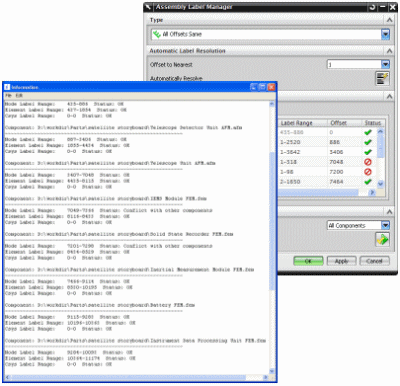

解析标签冲突
跟随装配有限元模型结构或它的组件有限元模型中的任何变化，检查节点、单元或者坐标系标签冲突，应用偏置以解析冲突。
在仿真导航器中，右键单击装配有限元模型节点，选择装配标签管理器。
确保在解析各个父装配有限元模型之前先解析各个子装配有限元模型。

-
运行验证
 将在信息窗口中生成文本报告，显示装配有限元模型中每个组件有限元模型和子装配有限元模型的标签状态。它将列出节点、单元以及坐标系标签应用的偏置范围，以及各个组件、子装配有限元模型以及装配有限元模型的当前状态。
将在信息窗口中生成文本报告，显示装配有限元模型中每个组件有限元模型和子装配有限元模型的标签状态。它将列出节点、单元以及坐标系标签应用的偏置范围，以及各个组件、子装配有限元模型以及装配有限元模型的当前状态。 -
自动解析
 将自动解析节点、单元以及坐标系标签，应用指定的偏置类型和值。
将自动解析节点、单元以及坐标系标签，应用指定的偏置类型和值。
在使用装配标签管理器解析包含子装配 FEM 的装配 FEM 中的标签冲突时，请注意，偏置已应用于整个子装配 FEM，而不是子装配 FEM 中的组件 FEM。在解析顶级装配 FEM 的标签冲突之前，必须分别解析每个子装配 FEM 的标签冲突。每次编辑子装配 FEM 时，应使用装配标签管理器解析子装配 FEM 标签冲突。